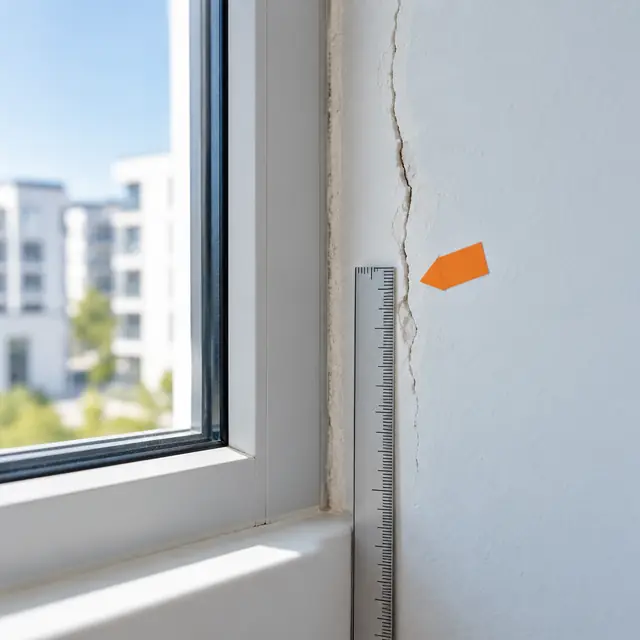
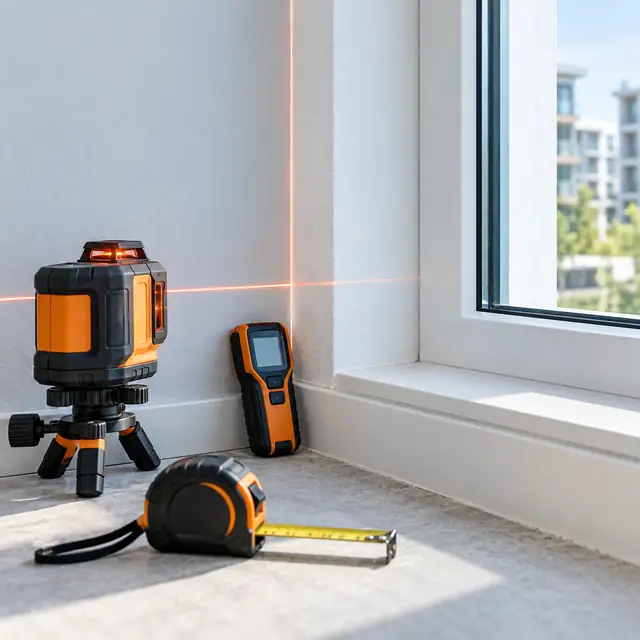
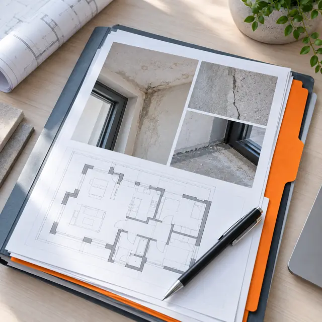
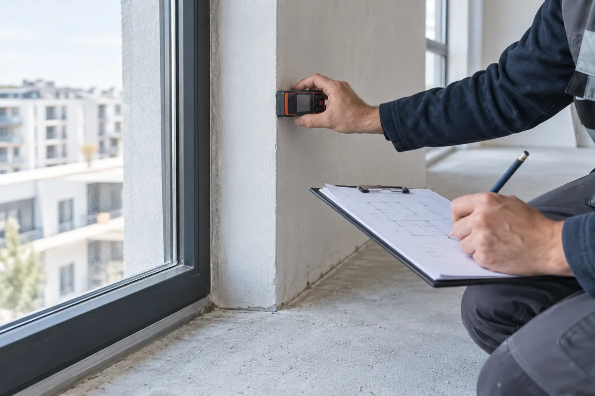
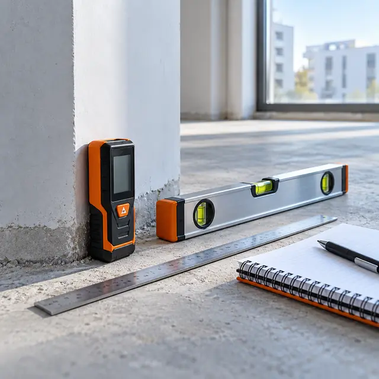
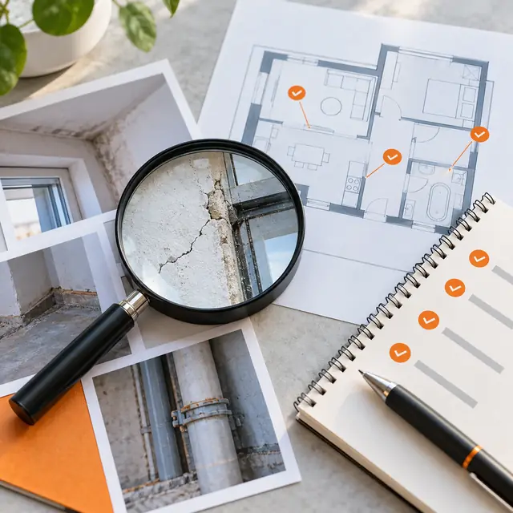
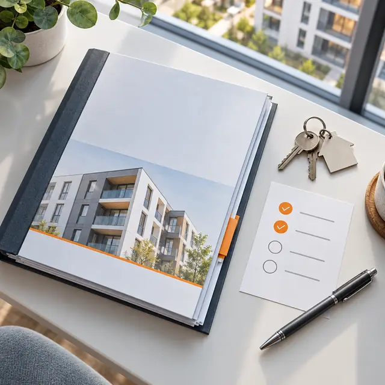

Застройщик не устраняет недостатки
Исследование помогает зафиксировать нарушения качества и сформулировать техническую основу дальнейших требований.
О компенсации за недостаткиСтроительная экспертиза фиксирует недостатки квартиры, помогает определить их причины и рассчитывает стоимость устранения — чтобы перейти от спора о качестве к документированным требованиям.
Экспертиза помогает перейти от общего спора о качестве к техническому исследованию объекта и документированным выводам.

Исследование помогает зафиксировать нарушения качества и сформулировать техническую основу дальнейших требований.
О компенсации за недостатки
Эксперт анализирует характер выявленных недостатков и возможные причины их появления в объекте.
Разобраться в дефектах
Результат экспертизы может использоваться при переговорах с застройщиком, подготовке претензии и судебном споре.
Посмотреть юридический маршрут
Состав работ зависит от объекта и задачи. Базовый смысл услуги — получить технически обоснованное описание недостатков и дальнейших действий.
Для экспертизы важно, чтобы акт приёма-передачи был подписан, а зоны обследования оставались доступными специалисту.
Экспертиза не заменяет юридическую оценку дела. Она даёт техническую основу для следующего шага, если он нужен.

Специалист изучает объект и фиксирует выявленные строительные недостатки.

В документе отражаются характер нарушений, возможные причины и последствия.
Определяется стоимость устранения дефектов по результатам исследования.

Результат можно использовать для переговоров, претензии, компенсации или судебного спора.
Стоимость зависит от типа квартиры. Оплата экспертизы производится сразу, а состав задачи уточняем до начала работ.
| Объект | Стоимость |
|---|---|
| Студия или 1-комнатная квартира | 20 000 ₽ |
| 2-комнатная квартира | 25 000 ₽ |
| 3-комнатная квартира | 30 000 ₽ |
| 4-комнатная квартира | 35 000 ₽ |
Компания объединяет технический и юридический блоки. Это позволяет передавать подтверждённые результаты между этапами клиентского пути, когда для этого есть основания.
Короткие ответы помогут понять разницу между приёмкой, экспертизой и юридическим сопровождением.
Опишите ситуацию. Уточним задачу, расскажем о составе исследования и сориентируем по подходящему тарифу.